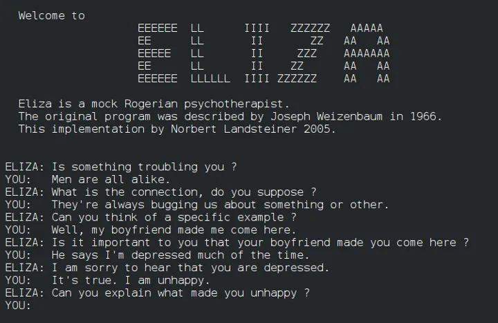
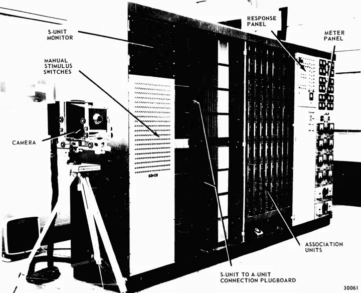
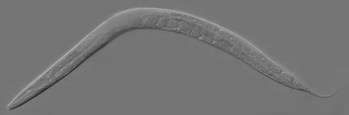
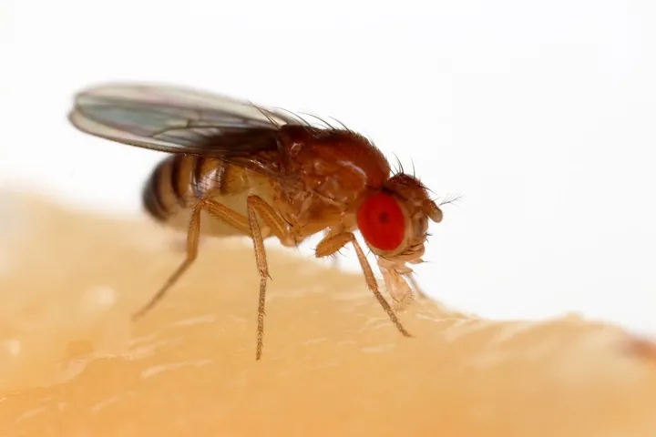
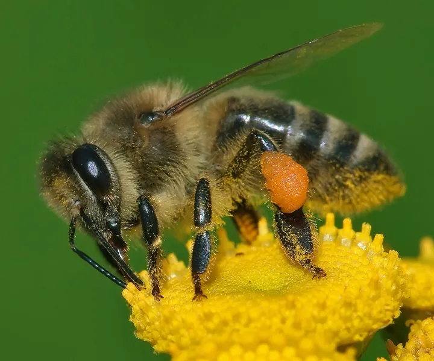
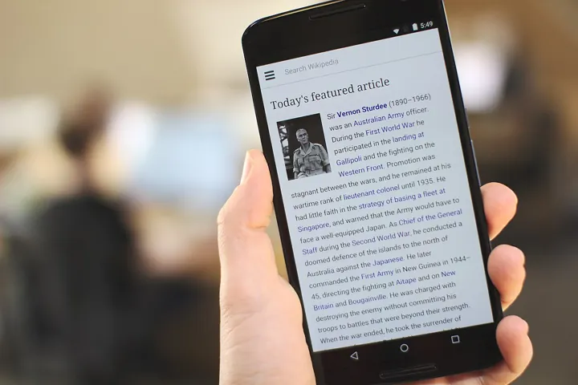
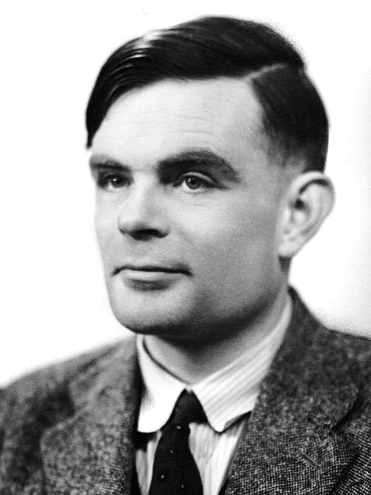
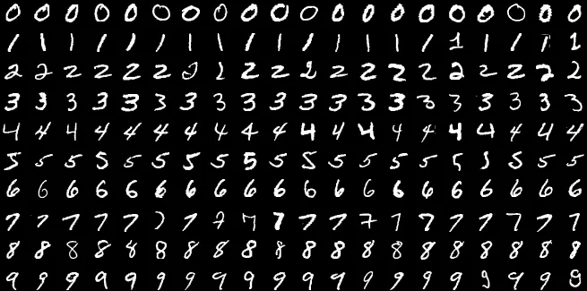
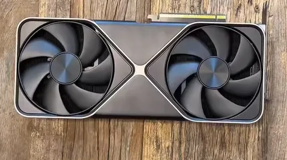

사진: 작자 미상 · Public domain
원본 보기

사진: John C. Hay, Albert E. Murray · Public domain
원본 보기

사진: The original uploader was Kbradnam at English Wikipedia. … · CC BY-SA 2.5
원본 보기

사진: Sanjay Acharya · CC BY-SA 4.0
원본 보기

사진: Andreas Trepte · CC BY-SA 2.5
원본 보기

사진: Sage Ross · CC BY-SA 4.0
원본 보기

사진: Elliott & Fry · Public domain
원본 보기

사진: Suvanjanprasai · CC BY-SA 4.0
원본 보기

사진: XD7006 · CC BY 4.0
원본 보기